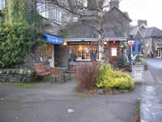

Grasmere and Rydal Tourist Information
 |
Grasmere is a small traditional Lakeland village situated in idyllic surroundings of fells, lakes and tarns and is one of the most popular tourist destinations in the whole of England's Lake District and Cumbria. Here, together with easy access to a range of wonderful walking, cycling, hiking and climbing opportunities are the graves of William Wordsworth and family in the churchyard of ancient St Oswald's. They feature among the most visited shrines in Europe. Close to the village is the lake where the poet often sat at it's edge and describing it as the “loveliest spot that man has found”. Summer months has Grasmere staging the annual Rush Bearing Ceremony and the widely acclaimed Grasmere Sports featuring traditional Cumberland &Westmorland Wrestling, fell racing, hound trailing and much more whilst the nearby village of Rydal's Sheepdog Trials & Hound Show is yet another fascinating Lake District and Cumbria event providing entertainment for all ages. Rydal is the home of Rydal Mount, which, as Wordsworths residence for the last 30 years of his life, attracts 1000’s of visitors each year. Below is a list of things to do and see in and around Grasmere and Rydal, where to eat and drink, walks, transport information, facilities and amenities. |
{kind=link}
{kind=link}
{kind=link}
{kind=link}
{kind=link}
Amenities/Facilities Post Office and Cash Point. Red Lion Square. Grasmere. Banks. Nat West and Barclays in Ambleside. Petrol Station. Lake Road. Ambleside. Public Toilets. Stock Lane Car Park. Car Parking. Broadgate Meadow Car Park. Grid reference NY338 077. Stock Lane Car Park. Grid reference NY339 072. Red Bank Road. Pay and Display. A few disabled spaces available in this area. Roadside parking in the village is limited to one hour only although there are some spaces on the A591 lay-bys. Finding a parking space in the high season can be difficult. |
How to get there: By rail: From the West Coast Main Line, change Oxenholme for Windermere. By road: Reach us from J36 of the M6 along the A590 / 591; or J38 along the A685 to Kendal before joining the A591; or; J40, and follow the very scenic A592 via Ullswater and the Kirkstone Pass to Windermere. By Bus: A regular bus service connects Grasmere to Ambleside, Windermere, Kendal, Lancaster and Keswick. Service numbers 555 and 556 to and from the bus stop in the centre of the village. |
Attractions in Grasmere and Rydal |
|
| Dove Cottage and the Wordsworth Museum The inspirational home of the poet William Wordsworth. www.wordsworth.org.uk |
Wordsworths Grave The grave of William Wordsworth in the churchyard of Saint Oswald is probably the most visited literary shrine in Europe. Together with the grave of he and his wife are the graves of his sister Dorothy, children Catherine, Thomas, and Dora, and Mary’s sister, Sarah Hutchinson. One of the eight yew trees planted by the poet himself shades his resting place. |
| Wordsworth Daffodil Garden The garden, created largely by volunteers, is placed between the River Rothay and the churchyard of Saint Oswalds. It’s a lovely contemplative setting with wooden seats under trees, springtime daffodils and encircled by fell views. Check the notices and leaflets at the entrance for information of how to make a contribution. |
Saint Oswalds Church A notice at the entrance to the church welcomes visitors in six languages. This greeting together with the home addresses from worldwide inscribed in the Visitors Book vividly indicates the popularity of the church. The terms “beautiful” and “serene” dominate the comments section of this same book. The church was named after Oswald, the 7th C. King of Northumberland who was instrumental in reintroducing Christianity to his Kingdom and other areas of Britain. It has stood in the village of Grasmere for centuries and on entering, the immediate feeling is that it will remain so for centuries to come. |
| Allan Bank Owned by the National Trust and once the home of William Wordsworth and the National Trust founder, Canon Rawnsley. Full of activities for children and an ideal place for parents to relax with a cup of tea. www.nationaltrust.org.uk/allan-bank-and-grasmere |
Sarah Nelsons Gingerbread Shop The appetizing smell of cooking soon attracts customers to the small serving counter of the Ginger Bread Shop at the gates of Saint Oswalds Churchyard. The gingerbread, prepared from a closely guarded secret recipe is a local speciality. The building is the centuries old former Grasmere village school where Wordsworth, his wife and sister occasionally taught. Just follow your nose, you can’t miss it. |
| Taffy Thomas’s Magic Garden The Magic Garden stands opposite the church of Saint Oswalds on Grasmeres main street. The story telling garden provides stories and expert telling for schools, theatres and arts projects. Children will love the lantern lit decorated garden. |
Grasmere Rush Bearing Ceremony Centuries ago, the floors of the church were cold, damp and of earth only. Indeed, it was not unknown for parishioners to be buried within the church confines as well as outside. Rushes were therefore laid on the floor to provide extra warmth underfoot. Each year, on a Saturday in July, villagers walk in procession to Saint Oswald’s carrying crosses of flowers and rushes. |
| Grasmere Garden Village A Home and Garden Centre selling a wide range of products, homemade soup, meals and drinks. Good parking. |
Wordsworths Seat A rocky outcrop at the western end of Rydal Water said to have been Wordsworth’s favorite viewpoint close to his home. An hour’s pleasant walk from Grasmere with great views. |
| Rydal Mount and Gardens The rented home of William Wordsworth and his family from 1813 to 1850. His friend Doctor Arnold described the house as “most beautiful and enjoyable spot”. The landscaped gardens were in fact designed by Wordsworth himself and had he not been a poet, would probably have followed a landscaping profession. The house contains many of the family’s personal items including first editions of his poetry. Guided tours often feature poetry readings. The house and garden tour is of one and a half hours duration and includes wine and a portion of the famous Grasmere gingerbread. A garden only tour lasts about one hour and a glass of wine. Free but limited parking on the roadside to Rydal Mount and alongside Saint Mary’s Chapel. www.rydalmount.co.uk |
Walks Grasmere stands in a charmed circle of sympathetic, intermediate and challenging walks and fell hikes. There are several low level introductory strolls ideal as a means of unwinding after a lengthy journey to Grasmere. One, not as macabre as the name suggests, is the picturesque “Coffin Trail” which wends its way between Grasmere and Rydal. It was used by medieval coffin bearers carrying the bodies of local residents for burial in Grasmere prior to the building of Saint Mary’s Church in Rydal. Other enjoyable family walks include those to Easedale Tarn overlooked by Blea Rigg and Tarn Crag, and the popular routes to Sour Milk Ghyll and Loughrigg Fell. The fell provides some of the most dramatic views to be found in the Lake District. A little more distant, but easily reached, are the intermediate and demanding tracks and paths to the higher ground of the Langdale Pikes, Bow Fell, Scafell Pike, Great Gable, Helvellyn and Borrowdale. Grasmere is also on Alfred Wainwright's Coast to Coast Walk and provides access to many of the Lake District and Cumbria popular walks, hikes and climbs ranging from low level to some of the most dramatic high routes in the UK. Please ensure that you are wearing suitable clothing and footwear for all walks especially so on the higher levels where weather conditions can change with little or no warning. |
| Wythburn Church A small church a few miles north of Grasmere on the A 591 is the only visible building left after the submerging of the two villges of Armboth and Wythburn to create the Thirlmere Reservoir. Wordsworth occasionally worshipped here. The nearby car park is a good starting point for the ascent of Helvellyn. |
Grasmere Sports This is Grasmeres event of the year. It features all that is best of local traditions, crafts and sports. Go to our Events Page for the date and details of this annual summer festival and others all within easy reach of Grasmere. |
| Fishing The shores of Grasmere are popular with walkers, cyclists, picnickers etc; some anglers prefer to fish for the large pike and roach of the lake from a hired boat. Boat hire can be arranged by calling 015394-35060. Day permits are available seven days a week during shop hours from the newsagents, Barneys Newsbox in Grasmere. None are sold from the bank. www.lakedistrictfishing.net |
The A591 The section of this road from Windermere to Keswick via Ambleside and Grasmere has been rightly voted by a popular motoring magazine as the most scenic in the country. It runs alongside Lake Windermere, Rydal Water, Grasmere, over Dunmail Raise with Helvellyn on one side and Thirlmere on the other, the magnificent views toward Saint Johns in the Vale and Blencathra and finally to the panorama of Derwentwater as you begin the descent to Keswick. |
| Kirkstone Pass Take the A 591 from Grasmere to the mini-roundabout on the outskirts of Ambleside and its exit leading to the highest pass open to traffic in the Lake District where some sections have a gradient of 1 in 4. Wordsworth wrote “it is most potent when mists veil the sky”. Apparently, this steep winding road, originally a drovers track, was so named after a large stone landmark on the roadside which from some angles resembles a church steeple, hence “Kirkstone”. The centuries old Kirkstone Pass Inn at the summit stands on the site of a 15th C. monks retreat. Crackling log fires, stone floors, beams, a ghost and friendly service. |
Dora’s Field The “field” is adjacent to Saint Mary’s Chapel. Wordsworth purchased the land on which to build a house for his daughter Dora. Sadly Dora died in 1847 before the house could be built. In her memory, Wordsworth planted daffodils on the land. The Springtime blooms produce a beautiful display to this day. Actually, Dora’s Field is not a field, but a pleasant sloping area of rough grassland, trees and paths with benches on which to pause and reflect. Access is via the churchyard. |
| Rydal village Rydal and Grasmere together form the Wordsworth Connection. The village occupies a beautiful location close to Rydal Water and surrounded by fells and wooded slopes. Nearest towns and villages are Windermere, Ambleside, Grasmere and Keswick all situated on the A591, a road which has been voted the most scenic in England. |
Saint Mary’s Church /Chapel |
| Rydal Water The smallest and shallowest of the regions lakes. Overlooked by Loughrigg Fell, it has a level lake side walk and a gentle upward path to Rydal Caves. The caves are abandoned slate quarry workings with cavernous entrances covered by shallow water and easily crossed by a series of stepping stones. Lovely views and good photography opportunities especially toward Dunmail Rise. |
Walks and climbs There are walks, hikes and climbs to satisfy all levels of experience and abilities in the nearby Langdales, Furness Fells, Helvellyn and Borrowdale. The Tourist Information Centres in Grasmere and Ambleside will provide advice and help. |
| Cycling/Mountain Biking A wide choice of routes including Loughrigg Fell, around Grasmere and Rydal Water, and the Grizedale Forest trails. The Tourist Information Centres have full details. Loughrigg Circuit of 9.6 kilometres. www.mountain-bike-cumbria.co.uk Vale of Rydal Cycle Route of 19 kilometres graded as easy. www.everytrail.com |
Electric Bicycle Tours Tours by a qualified Blue Badge Guide. www.discoverlakeland.co.uk |
| Electric Bike Network Get 20% off electric bike hire when you travel to the Lake District by train. For details see www.electricbicyclehire.com |
Fishing Excellent pike fishing from Rydal Water plus good stocks of eels, perch and brown trout. Day permits available throughout the area. Nearest agent to Rydal is the newsagent, Barneys Newsbox, Broadgate, Grasmere. Please note that permits are not sold on the bank |
| Rydal Sheepdog Trials A much loved event usually staged in the autumn. The skill of the dogs and owners has to be seen to be believed. Check our Events Page for date and details. Much, much more to see of the Lake District Culture and traditions in festivals in and around the region and all within easy travelling distance. |
|